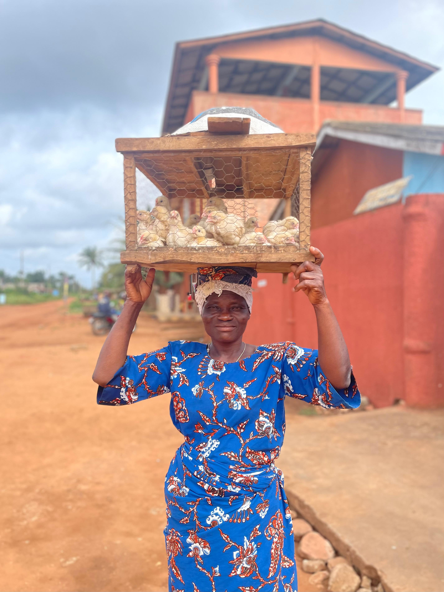
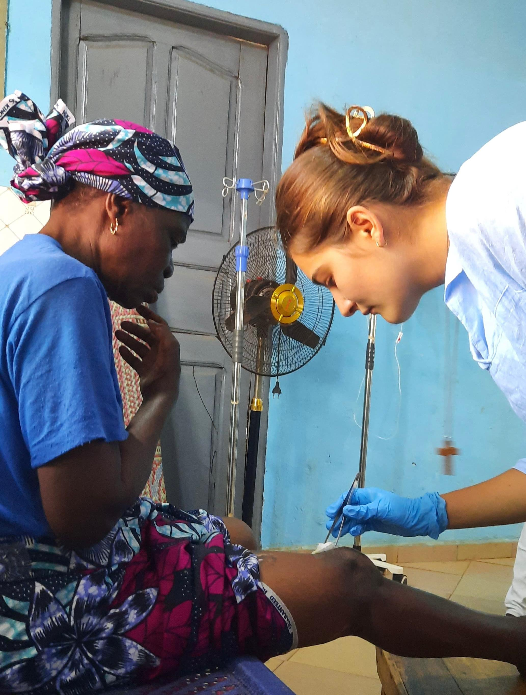
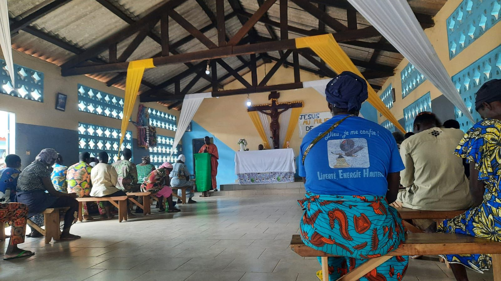
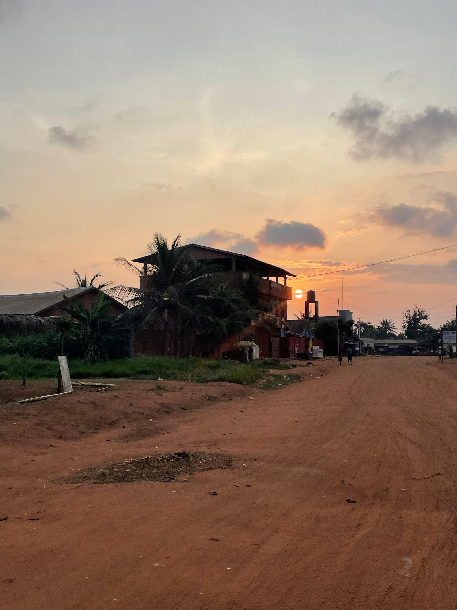
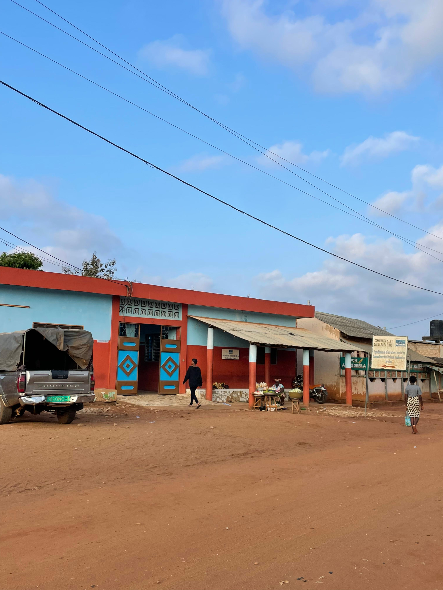
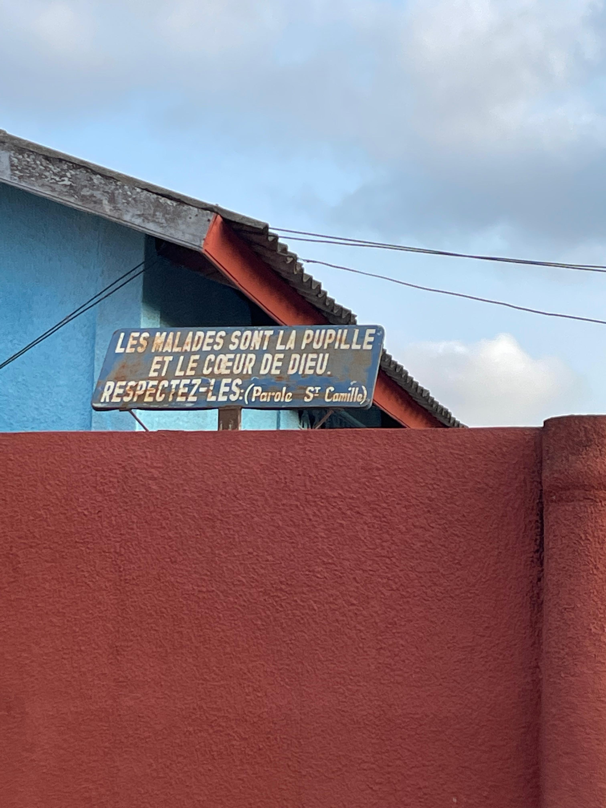
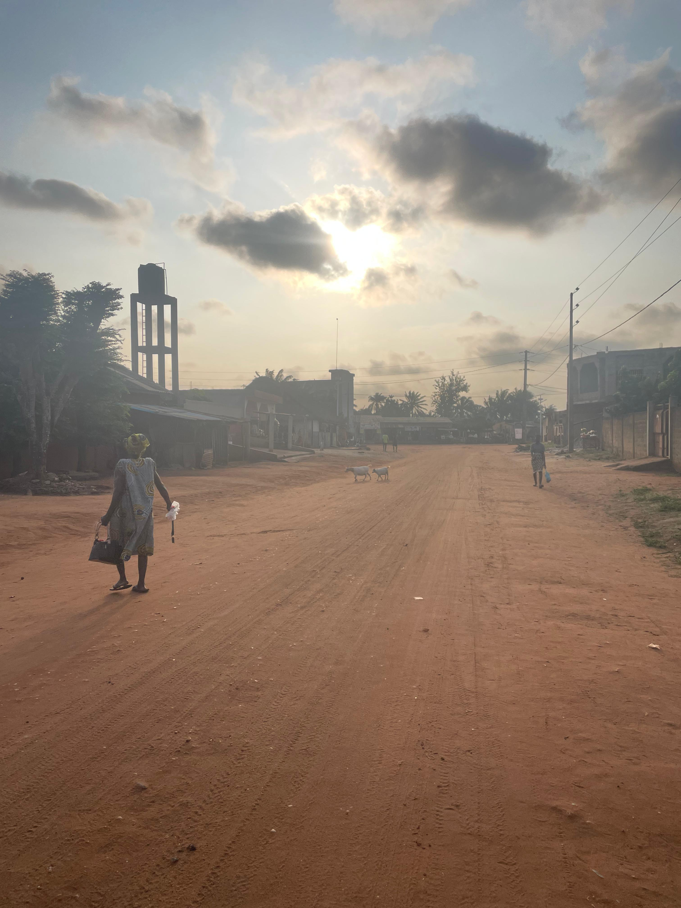
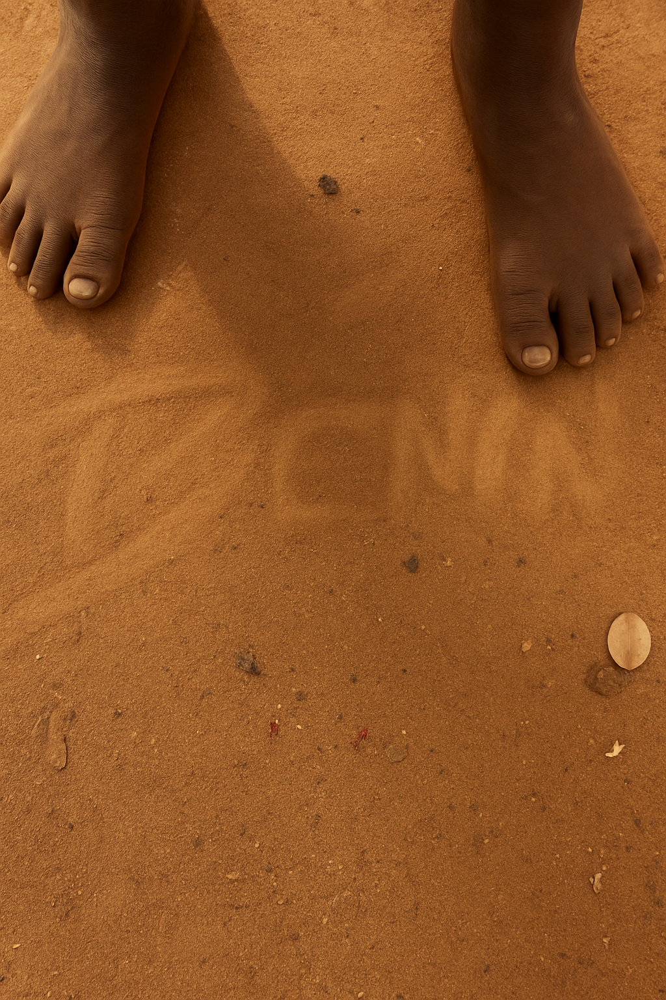

Ce film propose au spectateur un regard direct sur des réalités souvent ignorées, en montrant que la misère n'est pas un concept abstrait : elle est vécue, ressentie, et fait du quotidien un véritable combat pour ceux qui en souffrent. Il révèle aussi la résilience et l'espoir qu'on ces habitants alors que tout semble perdu, montrant leurs joie de vivre, leur sens de l'hospitalité, leur foi...
L'intention est double : provoquer, parfois, un certain inconfort nécessaire pour que la réalité soit perçue sans filtre, tout en inspirant et en donnant de l'espoir, en montrant des actions concrètes qui changent des vies. À travers le parcours de Noémie et Suzanne (2 volontaires envoyé en mission au Bénin) et des volontaires qui l'accompagnent, le film explore la prise en charge gratuite des personnes en situation de troubles psychiatriques, les témoignages de patients guéris ou en voie de guérison, et met en lumière le travail remarquable d'organisations comme l'Association Sainte Camille de Lellis et FIDESCO.
Il offre également un regard sur la culture locale et les contrastes saisissants entre grandes villes et villages, révélant les disparités économiques et sociales du Bénin. En mêlant réalisme et humanité, le film cherche à montrer la dureté du monde sans sombrer dans le pessimisme, et à sensibiliser le spectateur à l'importance de la solidarité et de l'engagement, pour qu'il quitte la projection en étant au courant de la dure réalité de ce qui se passe au Bénin, tout en ressentant un sentiment d'espoir en l'humanité.
Musique d'ouverture au piano pour accompagner les images drone et les voix d'enfants.
Musique pour la transition France/Bénin et les plans de joie de vivre.
Musique émouvante pour accompagner le témoignage de guérison.
Musique pour accompagner les différences culturelles. En cours de sélection
Musique de conclusion du documentaire.

Affiche en cours de chargement...';">Chère Madame, cher Monsieur,
Il y a quelque temps déjà, Noémie Veyret vous annonçait son départ en volontariat au Bénin. Ça y est, elle est arrivée sur le terrain ! La voici au service de la mission, nous nous en réjouissons !
Après une phase de découverte et d'acclimatation, elle a rédigé quelques pages qui relatent ses premiers pas dans sa nouvelle vie. Je suis très heureux de vous les partager. Vous pourrez ainsi découvrir le contexte de son action auprès des plus pauvres.
"Aidez-vous les uns les autres à construire des ponts par le dialogue, par la rencontre, tous unis pour être un seul peuple, toujours dans la paix."
Par cette phrase, le Pape Léon XIV nous exhorte à la paix, au dialogue et à l'unité; un appel qui résonne profondément avec ce que vivent nos volontaires aux quatre coins du monde.
Grâce au soutien de nombreux donateurs, Fidesco permet chaque année à des familles, des couples et des jeunes de partir se mettre au service de la mission. Nous avons plus que jamais besoin de vous pour continuer à maintenir la présence de nos volontaires sur le terrain !
Les volontaires sur le terrain ont besoin de se sentir soutenus. Participer financièrement à la mission est un geste certes matériel, mais il témoigne aussi d'une proximité et d'un soutien concret. Je me fais le porte parole de Noémie pour vous dire combien votre présence compte pour sa mission. Aidez-la dans son engagement, parrainez sa mission et recevez tous ses rapports de mission trimestriels.
Nous vous remercions d'avance de tout ce que vous pourrez faire.
Dans la joie de la mission,
Hubert Laurent
Directeur de Fidesco
Chers chers amis, chère famille,
Je tenais avant tout à vous remercier de tout cœur pour votre investissement au sein de ma mission et vous assurer de ma prière. Votre engagement me permet de vivre pleinement cette belle aventure et je vous en suis très reconnaissante.
Me voilà arrivée il y a déjà trois mois au Bénin, avec ma binôme Suzanne, le 1er septembre 2025. Les premières semaines ont été rythmées par beaucoup de découvertes de cette nouvelle culture, et de notre mission et je vais tenter de vous faire gouter à mon aventure dans ce premier rapport de mission.
Mais avant cela, je vais vous rappeler dans quelle contexte je suis partie. Avant de débuter ma vie professionnelle de psychomotricienne, j'ai ressenti le besoin de m'engager dans une mission humanitaire. Je recherchais une expérience forte, en dehors de ma zone de confort, qui me permettrai de m'ouvrir à d'autres cultures et de grandir aussi bien humainement que spirituellement.
Après avoir beaucoup reçu, j'ai profondément à cœur de consacrer une année au service des autres, dans un esprit de gratuité et de disponibilité. Nous avons bénéficié de plusieurs temps de formation grâce à Fidesco, qui nous ont permis de partir avec de bons bagages, prêtes pour la mission! Me voici maintenant envoyée au Bénin, au sein de l'association Saint Camille de Lellis, pour un an en tant qu'animatrice sociale.
Dès notre arrivée, nous avons découvert les routes, pour certaines tout juste goudronnées, et pour d'autres encore faites de terre battue que l'on nomme des vons, ainsi qu'une toute nouvelle façon de conduire ! Je pense qu'en France, on utilise autant le klaxon, mais pas du tout pour les mêmes raisons. Ici, on ne klaxonne pas pour exprimer son mécontentement, mais pour annoncer sa présence ou saluer quelqu'un au passage. Les voitures sont souvent pleines à craquer, et les motos sont partout. Là où, en France, il nous semblerait impensable de transporter certaines choses sur une moto, au Bénin, tout passe : familles nombreuses, cochons, meubles, fours... ! Les panneaux de signalisation sont plutôt rares, ce qui rend la conduite... disons, plus libre, voire un peu sportive parfois.
Leur notion du temps et des < j'arrive bientôt » est légèrement différente. Les Béninois ne se pressent pas, ils ne courent jamais, ils prennent leur temps, ce qui nous apprend à ralentir et à ne pas courir. D'ailleurs, il vaut mieux éviter de le faire, au risque d'affoler tout le monde, car ici, quand on court, c'est qu'il y a un danger imminent!
C'est une sensation étrange que nous avons ressentie avec Suzanne : avoir à la fois l'impression que les Béninois vivent au ralenti et que le temps, lui, passe à une vitesse folle. Peut-être parce que nous vivons davantage le moment présent, l'ici et maintenant, et que nos journées sont plus longues et plus intenses.
Comment parler de la culture béninoise sans parler de la musique, qui rythme nos journées (et même nos nuits de temps en temps). On en entend à tout moment, de plus ou moins loin. Elle anime les prières, les fêtes, les réunions; on chante et on danse. Elle unit les gens sans un mot, ce qui nous a permis de créer des liens assez facilement avec des personnes qui ne parlent pas français.
Je vous donnerai l'exemple de la fête de la chorale à laquelle nous avons participé. Lorsque nous sommes arrivées, les gens étaient en pleine louange. Nous avons donc eu le réflexe de rester à l'écart pour ne pas déranger. Mais, étant blanches, nous ne sommes évidemment pas passées inaperçues. Très vite, beaucoup de personnes sont venues nous chercher pour nous amener à l'avant et nous inviter à danser. Sans un mot, nous avons dansé et créé du lien avec plusieurs personnes autour de nous en tentant d'avoir le même rythme qu'eux, mais il est difficile pour nous, bonnes Européennes que nous sommes, de faire «vibrer > notre corps comme ils essaient patiemment de nous l'apprendre. Beaucoup de gens riaient lorsque nous essayions de reproduire leurs mouvements... Je pense que nous avons encore une belle marge de progression ! La musique, pendant les messes, est également un élément très important de la liturgie. On y retrouve souvent des chants accompagnés de beaux instruments, tels que le tam-tam ou le gong, qui rythment les mélodies. Nous pouvons aussi danser pendant la messe si l'envie nous prend c'est tout à fait normal, pour mon plus grand bonheur!
Autre grande découverte : le marché. Ici, la négociation n'est pas une option surtout quand on est blanche ! Avec le temps, je pense que je vais développer un talent de négociatrice insoupçonné. On y trouve toutes sortes de produits, principalement des aliments locaux : ignames, bananes, ananas, mangues, manioc, crincrin, riz, arachides, ainsi que des chèvres et des poules. On y croise aussi des vendeurs de tissus traditionnels, le wax qu'on achète de temps en temps pour nous confectionne des tenues béninoises. Certaines marchandes se déplacent avec leur étalage posé sur la tête sans jamais rien faire tomber, avec une agilité et une force remarquable.
Nous avons dû aussi nous adapter à de nouveaux plats et surtout à la répétition des mêmes mets. J'ai compris dès les premiers jours que la cuisine béninoise était moins variée que la nôtre, lorsqu'un Béninois m'a demandé quel était « le plat préféré des Français », question à laquelle je n'ai pas su répondre tant la gastronomie française est diversifiée. Ici, la base de l'alimentation est ce qu'ils appellent "la pâte", un mélange de farine de maïs épaissie à la cuisson. La culture béninoise partage cependant avec la nôtre l'importance du repas comme moment de convivialité et de partage. Mais attention: ici, on ne parle pas à table car nous risquerions de nous étouffer ! C'est une coutume que nous avons découverte dès notre arrivée à Avrankou, lors du premier repas partagé avec<« papa Amadji », le directeur du centre. Le silence à table nous avait d'abord mises mal à l'aise: nous pensions l'avoir dérangé ou offensé. Nous avons vite été rassurées par nos collègues en apprenant qu'il s'agissait simplement d'une habitude culturelle.
Les Béninois ont un profond sens de'l'accueil. Dès nos premiers jours au Bénin, nous avons été invitées à déjeuner chez plusieurs personnes, alors même qu'elles n'avaient que très peu de moyens. Je me souviens notamment d'Éric, l'un de nos collègues de travail, qui vit avec sa femme et leurs quatre enfants dans une seule pièce d'à peine six mètres carrés. Et pourtant, il avait tenu à nous recevoir dignement : il avait même acheté une bouteille de vin pour partager un repas avec nous. Éric ne savait pas comment déboucher la bouteille j'ai donc pris un grand plaisir, en bonne Française, à lui montrer la technique!
Cette rencontre nous a profondément touchées. Elle nous a permis de prendre conscience de cette pauvreté discrète mais bien réelle, et de la grande générosité qui l'accompagne souvent.
Les professionnels de santé du centre se sont aussi montrés très accueillants et disponibles. Ils ont été de véritables repères et soutiens dans nos débuts, nous permettant de poser toutes nos questions pour mieux comprendre la culture béninoise et nous adapter à notre nouvelle vie sur place.
L'adaptation culturelle me demande cependant encore un peu de temps, notamment dans le rapport au corps. En effet, la pudeur, les gestes, le toucher ne sont pas les mêmes. J'ai, par exemple, été assez surprise au début, en serrant la main d'un Béninois, de constater qu'il ne la lâchait pas après les premières salutations mais seulement à la fin de la conversation!
Nous faisons aussi l'expérience, parfois déstabilisante, d'être perçues comme « différentes > en raison de notre couleur de peau. Les enfants, en particulier, nous interpellent souvent dans la rue en criant « Yovo ! » (Ce qui signifie "Blanc"), jusqu'à ce que nous leur répondions par un petit signe de la main. Certains vont même jusqu'à nous suivre en chantant : "Yovo, Yovo, bonsoir !". En arrivant dans le village, nous pensions que ces appels s'atténueraient avec le temps, mais c'est plutôt l'inverse: le phénomène s'est amplifié. Les enfants, désormais plus à l'aise, s'approchent pour nous serrer la main et nous demander notre prénom. Les adultes, eux aussi, ont ce réflexe chaleureux de venir nous saluer et se présenter. Le contact avec les Béninois est extrêmement facile. Ils sont fiers de nous dire où ils habitent et aiment partager un aperçu de leur vie: leur travail, leur famille, leur maison, etc. Nous sommes constamment sollicitées, et cette spontanéité a grandement facilité notre intégration au village. Aujourd'hui, lorsque nous sortons dans notre rue, nous pouvons dire que nous connaissons presque tout le monde, et que beaucoup sont en train de devenir des amis.
Lors de nos premiers jours au Bénin, nous avons commencé notre aventure au sein du centre de Tokan ou nous avons eu la joie de rencontrer Grégoire Ahongbonon, le fondateur de l'association Saint Camille de Lellis qui nous a raconté son histoire.
À la suite d'une profonde dépression, Grégoire s'est retrouvé au bord du suicide. Désespéré, il s'est tourné vers un prêtre pour lui demander de l'aide. Ce dernier lui expliqua que chaque chrétien devait apporter sa pierre à l'édifice de l'Église, et que même les laïques avaient un grands rôles à jouer. Cette phrase fut pour Grégoire un véritable déclic: il comprit qu'il devait agir, sans encore savoir comment.
Peu de temps après, il fut profondément bouleversé par la vision d'une personne souffrant de troubles psychiatriques, seule et nue dans la rue. Il prit alors conscience de sa vocation: venir en aide à ces personnes marginalisées et abandonnées par la société et par leur famille. C'est ainsi qu'il fonda le premier centre de la Saint-Camille de Lellis.
En l'écoutant raconter son histoire, j'ai été frappée par sa grande humilité. Sa phrase fétiche, qu'il répète souvent, résume bien son état d'esprit :< Je ne suis que l'instrument du Seigneur, je n'ai rien fait. »
Aujourd'hui, les malades viennent de toutes parts, souffrant de pathologies diverses: schizophrénie, bipolarité, dépression profonde ou déficience intellectuelle. Beaucoup arrivent dans un état de grande détresse, enchaînés ou ligotés par leurs proches ou la police, parfois après avoir été maltraités par des guérisseurs ou des marabouts. Il existe également des sectes évangéliques. Après avoir été largement rémunérés, ces dernières les affament ou les frappent pour « chasser le diable » ou les « désenvoûter ». C'est souvent en dernier recours que ces personnes, épuisées et brisées, parviennent à la Saint-Camille, accompagnées de familles en larmes et à bout d'espoir.
Lorsqu'un nouveau patient arrive, la famille est d'abord reçue par l'infirmier-chef. Un entretien permet d'évaluer la situation et de proposer un traitement adapté. Les malades reçoivent d'abord un traitement par injection pour les apaiser pendant quelques jours. Si le retour à domicile n'est pas possible, le patient est alors accueilli dans le centre, où il bénéficie d'une prise en charge complète.
La Saint-Camille ne se limite pas aux soins : elle accompagne aussi la réinsertion des malades dans la société en leur offrant des formations professionnelles, couture, tissage, boulangerie ou jardinage. Beaucoup de patients affirment avoir été "sauvés" par cette structure, que l'on surnomme d'ailleurs "la cour des miracles" d'Avrankou. Sans la Saint-Camille, nombre d'entre eux auraient été laissés pour compte, sans ressources ni famille, voire condamnés à mourir dans la rue. Les premiers patients accueillis étaient d'ailleurs des personnes errantes, recueillies et soignées par les membres de l'association.
Aujourd'hui, la Saint-Camille d'Avrankou accueille entre 160 et 180 patients internes, pour des séjours allant de trois semaines à un an, et parfois à vie pour ceux qui n'ont plus de famille. La structure se compose de trois principaux sites:
- Le bâtiment administratif, où sont reçus les nouveaux patients et où les externes viennent chercher leurs médicaments;
- Le bâtiment des internes, où les patients résident plusieurs semaines ;
- Le site de Dangbodji, dédié à la réinsertion professionnelle et à l'accueil des enfants des patients.
Après cette belle rencontre avec Grégoire, nous sommes enfin arrivées à Avrankou, où notre grande aventure missionnaire a véritablement commencé. Les premiers jours ont été relativement doux : nous avons pris le temps de découvrir les lieux, de rencontrer nos collègues et de faire connaissance avec les patients
Dès notre première entrée dans le centre, nous avons été confrontées de manière très concrète à la réalité de la pauvreté que nous allions servir. Certains malades nous saluaient simplement, d'autres nous agrippaient, tandis que quelques-uns évitaient notre regard ou refusaient de nous serrer la main. Nous avons vu des personnes allongées à même le sol, d'autres errant sans but, ou encore criant des paroles incohérentes.
Heureusement, nous étions bien accompagnées ce jour-là, ce qui a rendu cette première rencontre à la fois douce et bouleversante. J'ai ressenti une sorte de choc émotionnel, un mélange d'impuissance et d'élan : une envie immédiate de comprendre et d'agir. Pourtant, j'ai vite compris que la mission ne pouvait pas commencer dans l'urgence et dans l'action. Il fallait d'abord prendre le temps : le temps de rencontrer, d'écouter et de comprendre.
Peu à peu, nous avons donc fait connaissance avec les patients. Ils nous ont raconté leur histoire, leur parcours de vie et leur combat contre la maladie. J'avoue avoir eu du mal, au début, à trouver ma place dans cette mission. Je ne savais pas vraiment comment "ajouter ma pierre à l'édifice". Notre mission principale consistait à être animatrices sociales, mais je ne voyais pas encore comment ces activités pouvaient réellement aider les patients.
Au fil des semaines, nous avons repris progressivement les animations mises en place par les anciennes volontaires: musculation, danse, football, activités manuelles... Chaque jour, nous leur proposons ces moments de stimulation, qui leur permettent de s'exprimer à travers leurs créations et de vivre un moment de convivialité. Ces temps sont aussi l'occasion de revaloriser les malades, de leur montrer qu'ils sont encore capables de faire de belles choses, qu'ils ont une dignité et qu'ils peuvent être reconnus comme des personnes à part entière. Ces moments leur permettent aussi, parfois, de se livrer, de nous partager leurs émotions et leurs ressentis.
J'ai réalisé que la plus grande richesse que nous avions à offrir, et qui était aussi au cœur de notre mission, était le temps : un temps gratuit, une écoute active, une présence bienveillante.
J'ai goûté à la joie d'être dans l'être et non dans le faire, comme Fidesco nous l'avait si souvent rappelé lors de notre préparation à la mission.
Avec le temps, nous avons commencé à mettre en place des fiches psychosociales, afin de mieux comprendre chaque patient dans sa globalité et de les accompagner au mieux dans leur parcours de réinsertion.
Le fait de vivre presque au quotidien avec eux nous permet d'observer, d'échanger et de comprendre plus finement leur fonctionnement, tout en repérant d'éventuelles difficultés à signaler à l'infirmière ou à la gestionnaire du centre.
Trois fois par semaine, les lundis, mercredis et vendredis, j'assiste l'infirmière lors des soins. Ma principale mission consiste à réaliser les pansements sur les petites plaies, ce qui lui permet d'alléger sa charge de travail.
Nous nous rendons également au centre de Dangbodji, où vivent en moyenne une trentaine d'enfants âgés de 6 à 18 ans, pour la plupart issus de malades ou d'anciens malades décédés. Nous y faisons de l'aide aux devoirs, un moment privilégié pour échanger avec eux et découvrir leurs besoins. Ces enfants nous offrent l'opportunité de côtoyer un autre public, de partager de beaux moments et d'apporter un véritable souffle nouveau à notre semaine.
Ce qui fait, selon moi, la beauté de la Saint-Camille, c'est cette manière unique de considérer chaque patient avec respect et de lui offrir une seconde chance, un nouveau départ. Ici, nous ne parlons pas de "patients", mais "d'amis" un mot plein de sens, qui traduit la profonde considération que chaque soignant doit leur porter.
J'ai pris toute la mesure de cet état d'esprit en découvrant, pour la première fois, le panneau apposé sur les murs du centre, visible depuis la rue comme depuis la cour, où il est écrit : "Les malades sont la pupille et le cœur de Dieu.".
Cette phrase de Saint Camille de Lellis prend de plus e n plus de sens au fur et à mesure que la mission avance. Notamment lorsque certaines situations me dépassent ou que je fais les pansements et que les soins deviennent difficiles, je repense à ces mots: je m'imagine soigner le corps du Christ, et tout devient plus simple.
L'un des grands atouts que nous avons eus en arrivant à la Saint-Camille, c'est notre regard neuf sur les personnes que nous rencontrions.
Je pense notamment à Thierry, un patient présent depuis de nombreuses années. Ancien toxicomane, il avait sans doute blessé beaucoup de monde autour de lui, et sa réputation au sein du centre n'était pas bonne. Lorsque l'équipe nous a vues en sa compagnie, plusieurs nous ont prévenues de ne pas trop nous en approcher, le qualifiant de voleur et affirmant qu'il ne changerait jamais. Au début, nous avons écouté ces mises en garde sans chercher à en savoir plus. Mais, avec le temps, nous avons pris le temps d'écouter Thierry et de découvrir un homme transformé, conscient de ses erreurs et déterminé à s'en sortir. Nous avons choisi de lui parler comme à un ami. Thierry est devenu pour nous une personne sur qui nous pouvons compter. Il est très serviable et aspire à une vie meilleure. II a même trouvé du travail à la mairie d'Avrankou. Petit à petit, il s'en sort, et le voir évoluer est une vraie joie. Depuis ce jour, j'ai compris l'importance de garder un regard personnel et ouvert sur chaque malade, sans se laisser influencer par les jugements du passé.
La mission à la Saint-Camille, c'est aussi se laisser toucher simplement par nos amis. Je prendrai pour exemple Sikirou, un jeune homme de 17 ans présentant une importante déficience intellectuelle. Il est arrivé au centre il y a quelques années. Ce jeune a tendance à nous attraper les joues ou à vouloir nous faire des bisous. Il présente également une grande rigidité corporelle et un fort bruxisme.
Lors des premiers jours au centre, j'appréhendais un peu sa présence : il se jetait souvent sur nous, et nous ne savions pas comment réagir. Nous étions à la fois confrontées à une personne en situation de handicap, et à nos propres limites corporelles, parfois violemment bousculées. Ce patient nous faisait en réalité un peu peur au début. Puis, lorsque nous avons commencé nos activités, j'étais persuadée qu'il ne serait pas capable de rester plus de trois minutes assis sur une chaise, encore moins de terminer une tâche. Et pourtant, une fois de plus, la première impression s'est révélée trompeuse. Sikirou est resté durant toute l'activité, concentré sur sa peinture, réalisant plusieurs œuvres sans crier, et nous appelant parfois pour que nous venions admirer et valider son œuvre. Au fil du temps, il nous a encore surprises :il sait jouer du tam-tam, chantonner en dessinant et même danser!
En somme, Sikirou nous émerveille un peu plus chaque jour et fait partie des personnes qui nous aident à dépasser nos préjugés et à nous laisser porter par la mission.
Lorsque je suis partie au Bénin, je pensais arriver avec une foi déjà bien solide, nourrie par mon éducation, ma pratique et mon engagement dans la mission. Et pourtant, j'ai été surprise de constater à quel point ma foi semblait bien pauvre face à celle de la plupart des patients que j'ai rencontrés.
Nos amis rendent grâce pour tout, car tout le bien est considéré comme l'œuvre du Seigneur. La foi donne à leur vie une dimension d'espérance immense. Lorsque j'encourage les patients en leur disant "ça va aller », ils répondent souvent : "Dieu fera" ou "Dieu est grand". Toute leur vie, leurs rêves, leur guérison reposent sur leur foi. Elle est leur pilier et parfois même le seul auquel ils peuvent s'accrocher dans les moments difficiles.
Un jour, la mère d'un patient m'a dit : "On a toujours besoin d'un plus petit que soi". Ces mots m'ont particulièrement touchée. Elle récapitule parfaitement ce que je vis ici : les malades m'enseignent la simplicité, l'amour gratuit, le pardon et la patience.
Finalement, la mission m'amène à accepter mes limites et mes faiblesses et m'aide à mieux accueillir et comprendre celles des autres, en saisissant humblement que nous sommes appelés à le servir le Christ avec toute notre humanité, faite à la fois de richesses et de fragilités.
En résumé, je peux dire que ce début d'aventure béninoise est à la fois déroutant et d'une grande richesse. Peu à peu, nous nous laissons apprivoiser par cette culture et par les personnes que nous rencontrons. Nous sentons nos cœurs s'ouvrir et se transformer jour après jour.
Je compte toujours sur vos prières, afin que le Seigneur m'accompagne, m'inspire et fasse grandir en moi, chaque jour, la joie de servir et d'aimer.
A très bientôt pour de nouvelles aventures,
Noémie